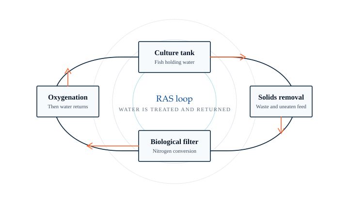
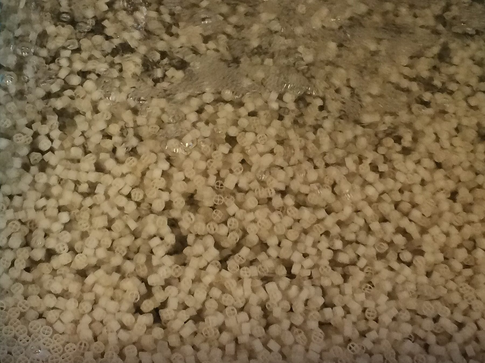
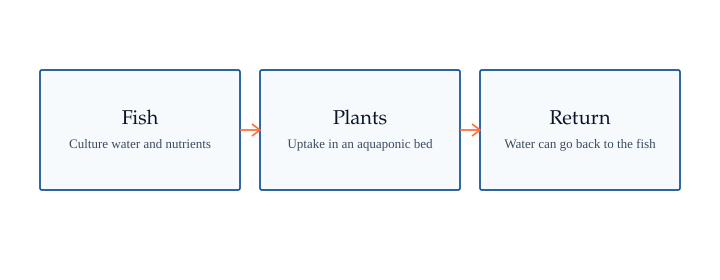
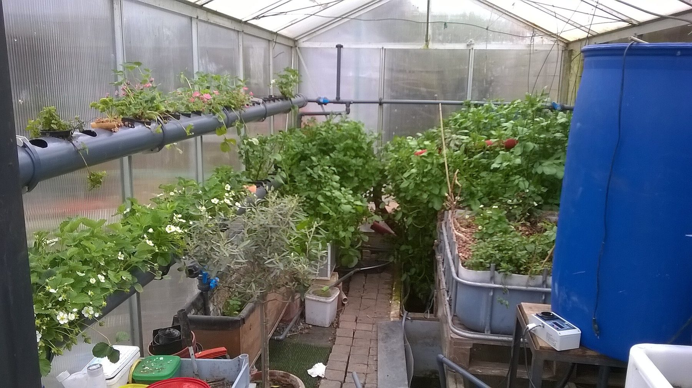
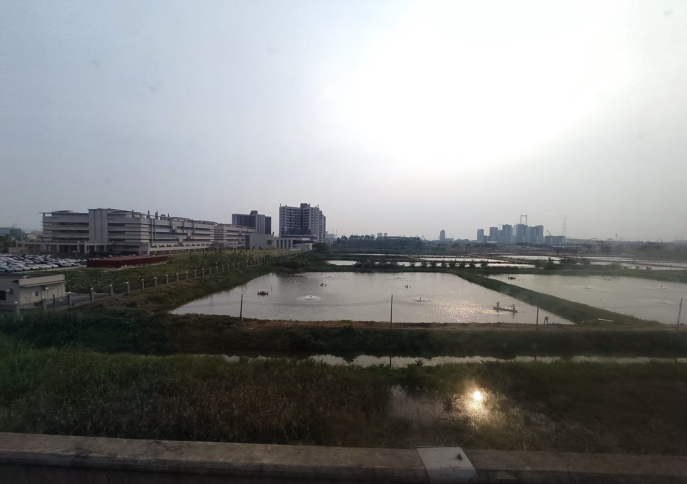

Home / RAS Operations
Demonstration base
A workshop you can walk through, at experimental scale.
The Phase 1 aquaponics intelligent-factory workshop is already in operation. Recirculating aquaculture is practiced here as culture, observation, and system management — not as a large commercial land-based fish factory.
The workshop
Recirculating water, watched closely.
In a recirculating aquaculture system, culture water is treated and returned to the tanks. Solids are removed, dissolved wastes are converted in a biological filter, and oxygen is restored before the water comes back. The point is stable water and careful husbandry, using far less water than an open flow of unused discharge.
Public accounts of the Nansha workshop describe the commissioning of a biological nitrification system and ongoing attention to water-quality indicators such as ammonia nitrogen, nitrite, dissolved oxygen, and pH. The company has also described a self-developed fishery management platform used to monitor water, keep production records, control equipment, and raise alerts.

How the loop is organized
From the tank, around, and back again.

Culture tank
Fish are held in a controlled body of water, not in an open pond discharge cycle.
Solids removal
Uneaten feed and feces are taken out so they do not load the rest of the system.
Biological filter
Microbial communities convert nitrogenous wastes. This step has to be built and then kept stable.
Oxygenation
Dissolved oxygen, and often gas balance, are restored before the water is reused.
Return
Treated water goes back to the tank. Fresh water is added only as the system requires.
This sequence is a general description of RAS practice, illustrated for visitors to the Nansha workshop. It is not a catalogue of equipment offered for sale as a packaged plant.


Aquaponics
Fish and plants in one measured circuit.
The Phase 1 workshop is an aquaponics intelligent-factory workshop. In this arrangement, nutrients that accumulate in fish culture water can be taken up by plants, and water can return to the fish after it has been used in that way. The 28 December 2023 commissioning event in Nansha included a stocking ceremony for this factory.

An explanatory drawing of the relationship, not a measured layout of the Nansha beds.


Pond-relay aquaculture
The workshop is not the only culture setting.
Public descriptions of the business also include pond-relay aquaculture — moving stock between more intensive and pond-based stages. This is part of how the company describes its work, alongside factory RAS operations and park development.


Experimental scale
About 50 tonnes a year, as designed for experiment and observation.
The environmental impact approval issued on 2 February 2026 (Yue Nan Shenpi EIA [2026] No. 10) describes the Bay Area Agri Valley project as intelligent fish-culture experiments and observational research. The designed annual experimental culture volume is about 100,000 jin, or about 50 tonnes.
Phase 2 of the same park is planned as research and cultural facility buildings, with a published building area of about 72,050 square meters. That is a building program. It is not a statement of commercial harvest capacity.
Tailwater
A recycling facility the company is building as the project owner.
On 21 February 2025 the company published a tender for a tailwater recycling project of about 38 mu. The bid cap was RMB 2,084,328.12. The published aim is to process 100 tonnes of aquaculture tailwater and 950 kilograms of solid waste per day, with solids processed into fertilizer.
In that tender the company is the construction and tendering party. The document does not, by itself, show that the company sells packaged RAS equipment to other farms.